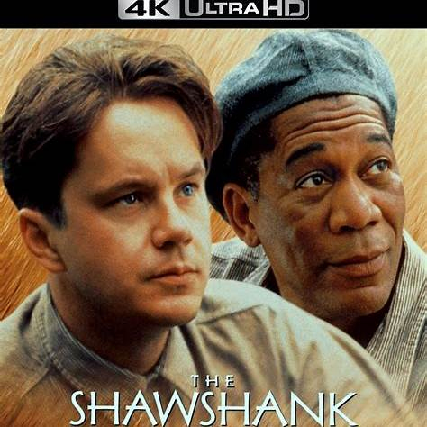
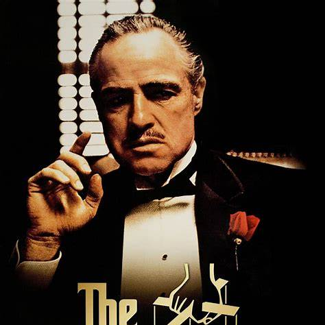
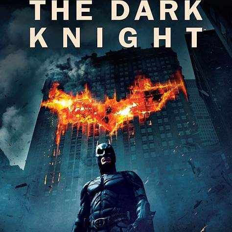
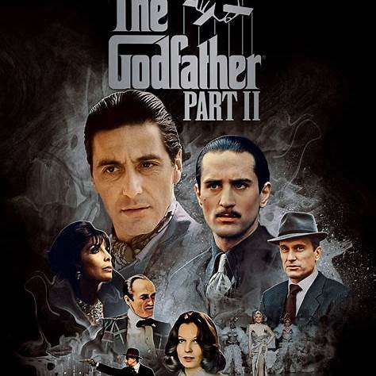
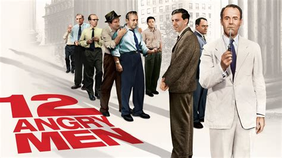

Top 5 movies of all times
Movie 1
The Shawshank Redemption is a 1994 American drama film written and directed by Frank Darabont, based on the 1982 Stephen King novella Rita Hayworth and Shawshank Redemption. It tells the story of banker Andy Dufresne (Tim Robbins), who is sentenced to life in Shawshank State Penitentiary for the murders of his wife and her lover, despite his claims of innocence. Over the following two decades, he befriends a fellow prisoner, contraband smuggler Ellis "Red" Redding (Morgan Freeman), and becomes instrumental in a money-laundering operation led by the prison warden Samuel Norton (Bob Gunton). William Sadler, Clancy Brown, Gil Bellows, and James Whitmore appear in supporting roles.
Movie 2
The Godfather is a 1972 American crime film directed by Francis Ford Coppola who co-wrote the screenplay with Mario Puzo, based on Puzo's best-selling 1969 novel of the same name. The film stars Marlon Brando, Al Pacino, James Caan, Richard S. Castellano, Robert Duvall, Sterling Hayden, John Marley, Richard Conte, and Diane Keaton. It is the first installment in The Godfather trilogy. The story, spanning 1945 to 1955, chronicles the Corleone family under patriarch Vito Corleone (Brando), focusing on the transformation of his youngest son, Michael Corleone (Pacino), from reluctant family outsider to ruthless mafia boss.
Movie 3
The Dark Knight is a trilogy of DC Comics superhero Batman films directed by Christopher Nolan. In 1997, Warner Bros. had completely failed with a film based on this theme called Batman & Robin. Therefore, the company decided to revive the film series with a darker script in 2005 with Batman Begins, directed by Nolan and starring Christian Bale. Batman Begins was highly appreciated by critics and had certain commercial successes, which was the main motivation for Warner Bros. to release two sequels, The Dark Knight in 2008 and The Dark Knight Rises in 2012, with Nolan continuing to direct and Bale still playing the lead role. The latter two parts were a huge success and earned nearly $2.1 billion worldwide. The Dark Knight series is highly regarded by critics, nominated for many important awards and considered one of the best film series of all time.
Movie 4
Goodfellas is a 1990 American crime film directed by Martin Scorsese, produced by Irwin Winkler and distributed by Warner Bros. It is an adaptation of the 1985 non-fiction book Wiseguy by Nicholas Pileggi, who co-wrote the screenplay with Scorsese. The film stars Robert De Niro, Ray Liotta, Joe Pesci, Lorraine Bracco and Paul Sorvino. It is the first film in the trilogy of crime films directed by Scorsese, followed by Casino and The Irishman. The film narrates the rise and fall of mob associate Henry Hill and his friends and family from 1955 to 1980. Goodfellas is widely regarded as one of the greatest films in the crime genre, and is considered one of the best films of the 1990s. In 2000, it was deemed "culturally, historically, and aesthetically significant" and selected for preservation in the National Film Registry by the United States Library of Congress. Its content and style have been emulated in numerous other films and television shows.
Movie 5
12 Angry Men is a 1957 American legal drama film directed by Sidney Lumet in his feature directorial debut, adapted by Reginald Rose from his 1954 teleplay. A critique of the American jury system during the McCarthy Era, the film tells the story of a jury of twelve men as they deliberate the conviction or acquittal of a teenager charged with murder on the basis of reasonable doubt; disagreement and conflict among the jurors forces them to question their morals and values. It stars an ensemble cast, featuring Henry Fonda (who also produced the film with Rose), Lee J. Cobb, Ed Begley, E. G. Marshall, Jack Warden, Martin Balsam, John Fiedler, and Jack Klugman.